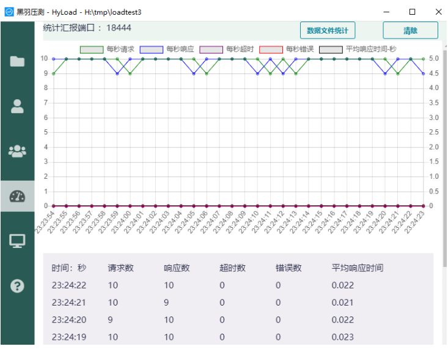
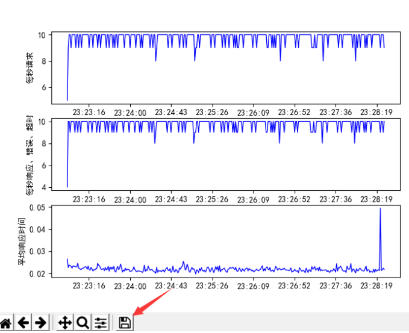

几周前的一个周五，帮朋友忙，需要给个软件做压力测试，花了一晚的时间学习了下，然后就赶鸭子上架去做这个事了。
想着有时间把学习过程整理下，结果忘掉了。
今天欢哥问到我上次压测用了什么软件，才想起这个事，暂且整理下吧。
一番调研后，先筛选了4个软件：Loadrunner、Jmeter、Apache Bench、SysBench。
首先是做技术选型，目前主流的压力测试软件就是Loadrunner、Jmeter。
其他常用于性能测试的软件还有Apache Bench、SysBench。
Loadrunner商用，有破解版，但是学习成本太高。
Jmeter是基于jdk的，开源免费，学习简单，但是需要配合badboy或者代理方式录制脚本，比较麻烦。
Apache Bench 看名字就知道是阿帕奇家族的了，俗称的ab压测工具。支持apache、nginx、tomcat、IIS等服务器。安装、使用都比较简单。
SysBench类似Apache Bench，但是只能在Linux上安装。
需要测试的web应用主要是压测其登录、注册、列表打开这些场景，没有GUI界面、脚本录制功能的两个Bench工具首先放弃了。
Loadrunner太大，还要破解，学习成本太高也放弃了。
最后选中Jmeter，找了些资料，还去哔哩哔哩找了个视频现学。
在哔哩哔哩学习Jmeter的时候，发现了黑羽压测，感觉比较适合我的场景。
黑羽压测（Hyload ），基于Python3，录制脚本简单，可以远程监控服务器并秒回图形，不需要导出top、sar、vmstat这些资源监控命令的结果手动绘制图形了。
如果并发非常大，需要多个压力机测试，Hyload要购买pro版，不过一般一两万并发普通版本就够了。
花了几个小时把黑羽实战了下，第二天就现学现卖。
结果到了现场傻眼，都是内网，而且是堡垒机，一运行就是黑羽压测就是黑屏，也没报什么错误出来。
估计是win7版本太低了。
想想直接去下了Python3.7来安装，然后运行下，看看到底报什么错，然后运行下。
果然有报错提示了，结果提示没有win7 servpack1。
又下载了servpack1补丁包，还是不能运行。
又按照提示下了两个api-win的补丁。
早上9点多去的，搞环境一直搞到了下午三点，才把环境运行起来。
黑羽压测方便的一点是浏览器f12查看network，save har可以直接导入到hyload的ide中，稍微改下脚本就好了。
并且贴心的有tps qps的压力图，还可以直接远程部署监控脚本到被测服务器上，采集信息后出具cpu io的监控图表，对于出具性能测试报告比较方便。
官网教学文档：http://www.python3.vip/doc/tutorial/hyload/01/。
哔哩哔哩也有学习视，链接不放了，自己搜下。
压力监测图如下：

服务器监测图如下：

实际上真正的性能不是测试出来的，而是设计出来的，但是在此不展开。
1、性能需求收集、分析
2、制定测试指标，编写测试计划、测试用例
3、测试工具选型，此步骤与2可调换
4、执行测试，观察测试指标
5、达不到指定测试指标则修改代码或提升服务器性能再次压测
6、出具测试报告
服务端指标：
吞吐量：系统单位时间内可处理业务量
并发数：在保证响应时间要求下的可同时处理的最大请求数
（隐含条件） 最高负载下，服务器资源占用率应在80%以下客户端指标：
响应时间：从用户发起请求到完成所花费的时间
在线用户数：一定时间内对系统产生访问的用户数。一些术语：
qps , 每秒查询请求数
tps ， 每秒事物处理数/每秒接收响应数
eps， 每秒错误响应数
tops， 每秒超时请求个数（这个是黑羽压测单独拎出来的一个指标，有时候看eps就够了）
avgresptime, 每秒平均响应时长
Throughput，吞吐量，即系统在单位时间内处理请求的数量。使用压测工具压测时，不光观察应用的情况，还要随时观察服务器资源，如
1、CPU 占用率
2、内存使用率
3、磁盘访问量
4、网络吞吐量 观察这些资源，在Linux下可使用top、iostat、vmstat、sar等工具。
错误：
1、把吞吐量当做并发
2、把客户端说并发
3、把在线用户说成并发正解：
1、吞吐量是按时段来考虑的，并发数是按时刻来考虑的
2、响应时间越短，并发数与TPS差距越大
3、并发数 = tps / avgresptime授人以鱼不如授人以渔，把黑羽压测这个测试工具怎么用，跟性能测试报告怎么写都教给了龙哥。
嗯，还是很有成就感的。
我开玩笑跟他说，以后他也可以去他公司其他部门输出性能压测这项技能了。
欢迎关注我的公众号：姚毛毛的博客
这里有我的编程生涯感悟与总结，有Java、Linux、Oracle、mysql的相关技术，有工作中进行的架构设计实践和读书理论，有JVM、Linux、数据库的性能调优，有……
有技术，有情怀，有温度